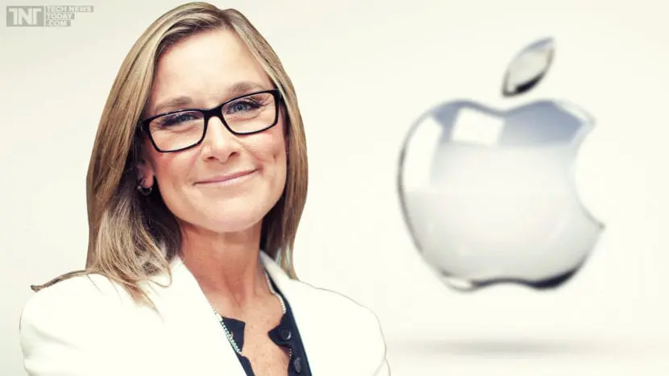

Angela Jean Ahrendts nasceu em 7 de julho de 1960 em New
Palestine, Indiana. Graduou-se em Merchandising and Marketing na
Universidade de Muncie, Indiana. Depois de formada ela se mudou
para Nova york para trabalhar na indústria da moda, ela se juntou a
Donna Karan em 1989. Alguns anos depois ela começou a trabalhar na
Fifthj e Pacifc Companies como vice presidente da corporação.
Em 2006 Ahrendts assumiu como CEO da Burberry (uma empresade luxo da indústria britânica).
Como CEO ela foi responsável por expandir a empresa abrindo franquias em diversos países como a
Espanha e contribuiu para aumentar o lucro da empresa em 20%. Em 2014 ela deixa o cargo de CEO
da Burberry para se tornar vice presidente sênior de varejo da Apple reportando-se diretamente ao
CEO Tim Cook.

Ahrents propôs mudar a experiência nas Apples stores. Concebeu que as lojas Apple se tornassem lugares
nos quais o usuário não fosse comprar um equipamento e sim entrasse em contato com todo um ambiente
tecnológico fornecido pela empresa. Propôs também um alcance social para a empresa, fornecendo aulas
de programação básica, e capacitando professores de escolas locais. Mas suas ideias inovadoras não
foram o motivo pelo qual Angela ficou famosa no mundo da tecnologia. Ao apresentar suas ideias em um
evento (em que era a única mulher palestrante) foi trending topics no Twitter e em diversas redes sabe como?
PELO SEU CASACO! Seu trabalho, ou seja, seu CONTEÚDO, foi invisibilizado, toda sua contribuição
e trabalho na empresa em segundo plano! Em destaque… A EMBALAGEM, a roupa! O que Steven Jobs vestia
nos lançamentos de produtos? Calça jeans, tênis, uma camiseta básica.
FALAVAM DAS ROUPAS OU DOS PRODUTOS ? A situação vivenciada por Angela Ahrents
mostra a importância de ser olhado o TRABALHO das mulheres não elas em si.